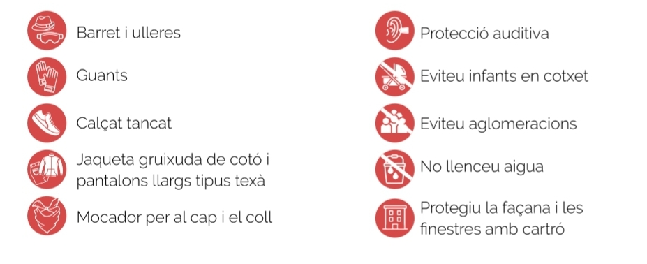

01 · Cercavila
Cercavila cap a l’inici del correfoc
Des de la plaça Trafalgar fins al punt d’arrencada del correfoc infantil.
- Pl. Trafalgar, davant de Torre Mena Inici
- Av. Marquès de Sant Mori, cruïlla amb C. Provença Final
Correfoc de ciutat des de 2015.
Recorregut
01 · Cercavila
Des de la plaça Trafalgar fins al punt d’arrencada del correfoc infantil.

02 · Infantil
Recorregut curt per l’avinguda principal fins a la plaça Trafalgar.

03 · Colla Gran
Circuit pel barri amb cinc punts de referència.
Seguretat

L’incompliment d’aquestes mesures és responsabilitat de cada participant. El servei d’ordre es reserva el dret d’expulsar qui no porti roba adequada o no actuï correctament.